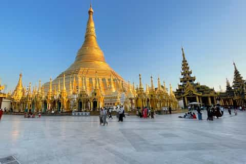
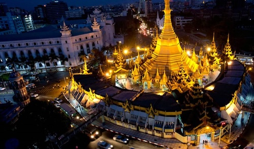
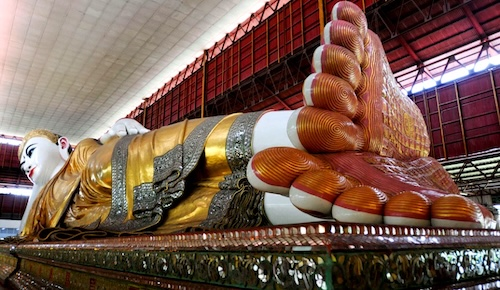
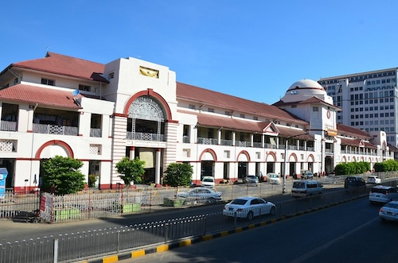

Biggest City Yangon
Shwedagon
The Shwedagon Pagoda is the most iconic landmark in Myanmar, known for its golden stupa that reaches 99 meters (325 feet). It’s a sacred site for Buddhists, believed to contain relics of past Buddhas. The pagoda is surrounded by smaller shrines, and visitors can admire its stunning architecture, especially at sunset when the golden surface shines.
Sule Pagoda
Located in downtown Yangon, the Sule Pagoda is an ancient Buddhist monument that has stood for over 2,000 years. It is a unique octagonal-shaped pagoda and plays an important role in the city’s history. It’s located at a major intersection, making it a central point of both religious and cultural significance in Yangon.
Kandawgyi Lake

Kandawgyi Lake is a beautiful man-made lake located in the heart of Yangon. It is famous for its scenic views, especially with the Kandawgyi Palace Hotel reflecting on the water. The lake area is a popular spot for locals to relax, take boat rides, and enjoy walking trails, offering a peaceful escape from the busy city.
Chauk Htet Gyi
The Chauk Htat Kyi Pagoda is home to one of the largest reclining Buddhas in Myanmar, measuring over 66 meters (217 feet) long. This impressive statue is adorned with gold and is a significant pilgrimage site for Buddhists. The pagoda also features beautiful surrounding gardens.
Bogyoke Markets
Bogyoke Aung San Market, also known as Scott Market, is a vibrant shopping destination where visitors can find traditional Burmese handicrafts, jewelry, clothing, and antiques. The market is housed in a colonial-style building, and it’s a great place to experience the local culture, shop for souvenirs, and enjoy street food.